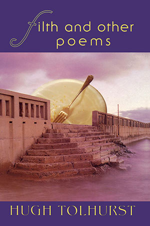

|
Filth and other poems: Hugh Tolhurst |
||||
 |

Book Description I
give you the family
outing at Southgate,
here they take you to the river but not quite in. The city looks lime at night, possessed of the consistency of a cocktail you cannot climb high enough to drink. I’ve locked myself out and I’m not going home. Filth and Other Poems is fun; amusing, insolent, irreverent, at times salacious, at times wise. It is a journey through Melbourne that is wilder than the guidebooks. The work varies from sceptical philosophical speculations on art, life, death and sex to anarchic poems closely resembling party scenes. It always entertains. ‘Unfaithful Translations’ are outrageious satire, the title poem a glinting étude; ‘Horse Lyrics’ impossibly wry but passionate black humour. Good to see poems about writing and living in the modern city. I like especially the lightness and friendliness of the lines. There is a self (an ‘I’) firmly in the foreground of these poems, but sometimes a playful and satirical one - but the language weaves and flows around in the foreground too. Nice stuff. Philip Mead
Filth and Other Poems is witty, talented and accomplished. John Forbes
ISBN 1876044179 Published 1997 63 pgs Top of page |
||||
Book Sample
Top of page Reviews
The Genius of the Reader (or Who’s sitting on the chair?) Filth and Other Poems Bev Braune Southerly, Vol. 58, No. 2, Winter 1998 I’ve
locked myself out of my house and I’m not going home
In his first collection, Filth and Other Poems, Hugh Tolhurst invites the observer to ‘touch’ rather than ‘watch’. Here lurk adventurous kisses embracing the electricity of the city with its bad breath, dirty pool and ‘sweet fucking idiots’. With his poems ‘hard to keep on the rails, hard to ride’ (‘Photocopies’), his powerful use of humour, the dissected word, shapes (questions, full stops, ampersands) place his wall-less room in the company of suicidal kids, prisons, ‘headache[s] run[ning] right through California’.
Tenderness
always has a signature; it’s just mostly the cheques bounce. I had a dream I was running alongside a train, my sore back keeping pace well, I had a dream I was running alongside a train, I had this bad bad dream, spent all my money on fucking Reeboks, ran into a level crossing & lost both my wings. ‘Horse Lyrics 2: last ride’ ‘Unfaithful Translations’ is impressive with Tolhurst’.s strong sense of self and of those whom he has reluctantly summoned to the ride to the ‘level crossing’: mates from the old Richmond Club, lovers, his father, the literary heartland. We are jammed into the front seat, racing with the ‘dashboard legend’ measuring ‘illicit miles’. Goodbye,
my girl, Tolhurst is unmoved,
will not be contesting your divorce. You’ll be sorry when your phone’s inert, glacier bitch, what life awaits you? Who will find you beautiful? Who caress? Who will you love? What Byron take you out? Which blue lips will you be blooding then? & you, Tolhurst, face north, make like stone. ‘Unfaithful Translations VIII’ If I have a favourite among these seven volumes [Pam Brown, 50-50, Alison Croggon, The Blue Gate, Jeff Guess, Living in the Shade of Nothing Solid, Muriel Lenore, Sun, Wind & Diesel, Zack Ross, B-Grade, Andrew Sant, Album of Domestic Exiles, Hugh Tolhurst, Filth and Other Poems], it is Filth and Other Poems. Legends of the heart are carefully and intelligently mapped so that even if ‘the chair’ keeps changing its position, we can still touch the air where it once stood. There
are things a violin can drag out of the air
that my lips won’t attempt to circle. ‘Horse Lyrics 4. after Warren Ellis’ I find Tolhurst’s debut collection down-to-earth, sharply honest. His heart and head are ‘open-house’. His unfettered use of the page - the way he reads not only ‘the chair in the room’ but how well he sits on it - is uncluttered and wide awake. Perhaps the joy of an observer’s reading of a poem depends largely on how vividly composers tell us not only why but show us how they read the world-as-a-poem, and the observer’s understanding of the poem, on how well we read the reader - how well the poet composes him or herself on ‘the chair in the room’. The Seductive Microcosm Filth and Other Poems Jennifer Maiden Overland, No. 150, 1998 Hugh Tolhurst’s Filth and Other Poems is also rebellious in tone - which again makes its microcosmic presentation a pity. The title poem itself indicates a more resonant, subtle context: ‘the city looks lime at night / possessed of the consistency of a cocktail / you cannot climb high enough to drink. / I’ve locked myself out and I’m not going home’. Tolhurst works his way, however, through youthful cityscapes and succinct domestic intimacies, the predictable translation of Catullus involving fellow poets, and concludes with some stoical and elegiac love poems. Here, stoical elegy and its use of lyric fragmentation may be an easy means to poignancy. This is not terribly problematic since he has the skill and insight to achieve poignancy in other ways. Deft and deadly accurate Filth and Other Poems Tim Thorne The Mercury, 23 February 1998 Black Pepper by now has built a reputation as the most vigorous and interesting of the presses in Australia still publishing poetry. With the major publishers cutting buck or entirely eliminating their poetry lists, there is, of course, not a lot of opposition. But Black Pepper continues to put out excellent volumes, both of established and newer writers. Hugh Tolhurst’s book is his first, and it is most impressive, introducing us to the work of a witty, irreverent and street-wise poet who has obviously learned those lessons which are of significance to someone coming to poetic terms with the post-modern world, and learned them from a variety of teachers, from Catullus, Pound, Ern Malley, Ashbery and, most immediately, from the late John Forbes. His touch, like that of Forbes, is deft, usually light, but always deadly accurate. Filth & Other Poems Jennifer Kremmer Cordite, No. 4, 1998 Filth: 1. foul or disgusting dirt; refuse. 2. extreme physical or moral uncleanliness. 3. vulgarity or obscenity. (Collins Concise, 3rd edition) Why does Hugh Tolhurst feel the need to begin a book with a gesture of expansiveness rendered only faintly ironic by what he’s ‘giving’ (as if it’s possible to give what’s not actually owned): I
give you what is beautiful in my city,
the brake-fluid rainbows, the rosy urinals, the kisses among the litter on the foreshore finishing with: ‘I’ve locked myself out and I’m not going home’? Filth is the rejected’s realm. Filth is shit; hell; to give it is to express the ambivalence of a child in the face of another’s apparent power. Hugh’s gift to a gentle reader is entirely gestural; even as the opening poem sets a tone of masterful poet giving the gift of a city’s darker charms, he is also ‘locked out’, and Hugh later parodies himself as a fallen angel: I had
this bad dream,
spent all my money on fucking Reeboks, ran into a level crossing & lost both my wings Hugh sometimes asserts that he’s fallen (or lost his wings) due to hubris. But at other times, and perhaps more significantly, he engages in banter with well-known editors and poets, and it’s obvious that this prince of darkness also suffers from a heightened sense of embanishment (mind you, he still manages to rub shoulders in Lit Board soirees). But what else to make of:: &
where to tender my Catullus now
to you dear John, my ten-speed bankrupt, Forbes? The brave so soon become the editors & scandal fucks but quarterly by vow not to mention: I was
at University House once, loose
on my end, having failed to back a winner in the writer’s grants, when Wallace-Crabbe took a shine to my company. I think he thought her an escort The latter and similar barbs are Hugh’s ‘filth’, despite his claims to ‘give’ what is beautiful in his city’s underbelly early in the book. In a gentle, bantery way, Hugh does fling a little bit of shit: ‘Tranter asked for cocaine & had to sit in the corner’. In fact, however, the tone is so playful that it really does render pointless accusations of sour grapes for not having gotten a grant. Hugh’s grapes, if anything, are botrytic; he not only does not wish harm upon the rejectors, he still tries hard to win entry into their realm: ...so
you’ll allow
submitting this one poem without cause Filth in a child’s terms is about rejection, but since the child’s well-being depends on the parent, filth can only ever be symbolic. Note, for example, Hugh’s self-instruction after his ‘glacier bitch’ (many apostrophes are phrased in the possessive: ‘my friend’, ‘my Lesbia’, etc.) in the face of romantic dissolution: ‘& you, Tolhurst, face north, make like stone’. The poem is addressed to the departing love and thus the instruction by its very term already admits to failure. Bhind Hugh’s works is a belief of himself as a brooding Byron; a grand, lovable, dark and at times demented child. Friends are co-opted into a high order of poetic address to populate Hugh’s underworld with subjects: ‘Spend it, my Lesbia, live our love hard’; ‘Brooksy, you’d have told Tolhurst’; Arlan, of all my friends’; ‘Jim & Gene, Tolhurst’s mates’; ‘Spaced-out Alex’; and ‘Dine like the suburbs, Gordon, at my place’. There are also eight references to the poet by name: ‘Misfiring Tolhurst,’ etc.. Like the poems addressed to editors or other poets, these can seem obscure. In the end, it is exactly hubris in the sense of heightened ambition that for me is Hugh’s failing as a poet. He needs his underworld because it’s where he obtains people like pub audiences, he wants the limelight because it’s so well-lit (it is the Lit Board, after all). He might be, as John Forbes apparently said (rear cover blurb), ‘witty, talented and accomplished’, but he’s also genuinely convinced he ought to be where the successes are, and to get there he can often seem to talk above other people’s heads (a sometimes necessary Lit Board party trick). I suppose it’s a little like a ladder. Above Hugh’s head are the poets and editors he must either supplant or tickle the feet of in order to ascend; below is a diverse and sometimes competing audience. Hugh Tolhurst seems to want us to crane upward along with him; to watch and valorise his ascent for the wit and gestural grandness of his tactics. But, Hugh, there are other things to look at in the circus than the trapeze. Sideviews - Filth and Other Poems Jason Sweeney Sidewalk, No. 1, 1998 Tolhurst knows how to play pool in a city of regret:, filth and isolation. At home in the city (Melbourne), a place to view the ugliness, the stony cold. In his words you can find questions of self-doubt. Putting his mouth to your ear (objectively) there are some revelations on the act of writing. It’s about knowing how it feels to pass desire on the street, a sense of needing to be grounded, always recognising suffering. Love, destruction, dislocation, losing touch. Erasure. Religion and what of it. Getting back to playing pool: there are spaces, public places, sites of memory, people disappear. Tolhurst, creating scenes from a movie, characters from Hal Hartley films, dragging that cigarette around. Fractions of greater scenes, episodes in tight focus, entering like a drunk teenager on any drug. Sped up, then in slomo, a mundane scene becomes an epic, a blockbuster, a sham. Poems on speed. And then I find a desperate writer, clinging to words when there’s only one thing to do, to say, to someone, when words are never enough. I laughed a lot reading ‘Unfaithful Translations’, a poetic contender for The Triffids’ Born Sandy Devotional LP. In fact, I wanted it to be sung over a lazy melodic drone. Kind of attractive. Romantic, definitely dark cynicism. Then to later find some cool pantoums, conumdrums and a few more self-referential digs, nice to see it out in the open. And just before I could say The Dirty Three [an Australian band], the name Warren Ellis appears - yeah, it’s the world we fear, but it’s the concrete heart that stays at home, makes it hard to retreat from the sadness of everyday living. Like Adelaide. Tolhurst is full of instrumental words seeking an audience. Unfaithful Translations Hugh Tolhurst Filth and Other Poems Jack Bedson New England Review, No. 7, Summer, 1997-1998 Black Pepper press in North Fitzroy is among the current crop of small non-commercial publishers putting out attractive paperbacks of new Australian poetry with the assistance of the Australia Council. In these two 1997 volumes by Alison Croggon [The Blue Gate] and Hugh Tolhurst, Black Pepper shows us it can appeal to very different palates. Hugh Tolhurst announces intentions by opening Filth and Other Poems with the eponymous ‘Filth’, a statement of ambivalent, self-conscious and romantic grunge: I
give you what is beautiful in my city,
the brake-fluid rainbows, the rosy urinals... I’ve locked myself out and I’m not going home. The city is Melbourne and the Tolhurst tour starts and ends in the rag and bone shop of his own experience, an idle demi-monde of doing poetry and pool, drugs and smokes and grog and stuff. More of a Dransfield than a Berridge/Ettler grunge. As the rest of the title suggests, the book has that first-collection quality of a relay run with several different starts and styles and speeds. ‘Filth’ itself is a gem of a prologue, painted with few strokes, that sets up the poet as a Virgil offering us his Melbourne, but the tour is never delivered. His most sustained and successful tour-guiding is into the underworld of pool players in ‘Dirty Pool’, a suite of nine poems of ten lines each, rendered in unheroic couplets. The locales vary, but the nuances on pool culture are humorously observed, from Sydney fuck
up here, it’s two shots away
& likely you will lose the game to John Geese’s Torquay with its two tables, twin bouncers, you had to beat them to get on and the Richmond Club, where The Greeks, the Maoris & the Skips competed as relative gents. By comparison, the pieces in another long suite, ‘Unfaithful Translations’, are floor sweepings baled together by Tolhurst in mock-heroic vein. Apostrophising himself, his sometime lover and his fellow ‘happy dope fiends’, and name-dropping some well-known poets and editors, he jingles the low-finance currencies of the Tolhurst drug, love, reworking of the Malley voice, where the second and fourth lines of a four-line stanza are repeated as the first and third of the next, rolling hypnotically into the evocative last verse The
voice not yours, the words not yours,
Never a full stop where a semi-colon will do, In the dusk, a murder of crows; There are lines here that twist the guts. Unlike ‘Ern Malley’, the general range of Tolhurst’s interests is limited to Tolhurst psychic space, a get-to-know-me space of good humour and sometime bad grace, bittersweet and ironic lines, lyrical lines, puns, unexpected interpolations and image enjambments and a bit of surrealism. He shockingly bends the truth by pretending that Long Flat Red has a vintage. It doesn’t. Books In Brief - Filth and Other Poems Adam Aitken The Australian’s Review Of Books, Vol. 2, No. 9, 8/10/1997 Also classical (but post-Barbarian) in technique is Hugh Tolhurst’s first volume, Filth and Other Poems. The title tips its hat to a Catullan tradition modified by grunge bohemianism and post-punk desperation. Tolhurst’s verses are crafted for maximum wit and epigrammatic bite. His satires on the Carlton poetry scene ridicule its seediness, the ‘mentors’ easily bought off with a few bucks or the promise of a subscription or easy sex in a Lit Board-subsidised Saab. Despite Tolhurst’s overly gestural narcissism, a certain nobility emerges, perhaps the effect of measured, cadenced lines - a fin-de-siècle dandyism bolstered by wry wit; but he can encompass difficult subjects (like ways to kill yourself) with a refusal to sentimentalise. Poetry Shorts - Filth and Other Poems Lauren Williams Australian Book Review, No. 193, August 1997 I
give you what is beautiful in my city,
the brake-fluid rainbows, the rosy urinals, the kisses among the litter on the foreshore, the one-eyed seagull’s one-sided hunger. ‘Filth’ Unpretty Melbourne, through eyes somewhat world-weary, yet sharp with youth. Love and relationships form the subject of many of the strongest poems in the book, and it is clear the poet has done his research. The cocktail of drugs, drink, sex and cynicism is a recurring motif, but Tolhurst’s gift is in remaining elegantly distanced. His language is deft, highly conscious, often sensuous. Tolhurst is a keen observer of the subtleties of the pool table, the road and the lonely room, and of his own responses. He is at his best and deepest when writing most privately, in the poems about his father and brother. The mention of other poets (as in a sequence of poems after the style of Catullus) may earn points with the cognoscenti (as no doubt it did for Catullus) but the real test is whether the poem fully succeeds without depending on the reader’s knowledge of who’s who. Tolhurst wins one here and loses one, but the sequence overall is effective, stylish and witty. This is an assured first collection from an interesting poet. Back to top A Dense, Word-Haunted Forest - Filth and Other Poems Martin Langford Ulitarra, No. 12, 1997 On the whole, the pieces in Hugh Tolhurst’s Filth and Other Poems are not doing enough with their material. One problem is that the facility and lightness of touch which is one of the book’s most attractive elements is actually enabled by a sense of audience so strong - and, maybe, so specific - that it ends up having a limiting effect on the ideas and topics Tolhurst is prepared to explore. In some ways, these poems are like vers de societé written for the inner city: they have a strong feel for the opinions to which they are written, their voices display a public sense of role, and they are guarded by a degree of exclusiveness and (inverse) snobbery. In the sequence ‘Dirty Pool’, for instance, one has the impression that the real aim of the poems is to verbalize a solidarity with other frequenters of inner-city pubs (in terms of readers and listeners) and to make a literary virtue of this (in terms of critical positioning). Fair enough. I’ve never seen an argument that poetry has to be inclusive. But if you’re going to be aggressive/defensive about your lifestyle, you have to be prepared to accept that the principal purpose of your verse may end up being as a sort of bending statement delivered to one’s peers. At its best, Tolhurst’s verse displays an attractive decidedness of tone which stems from a strong sense of audience. A seise of audience, however, can be a trap for a poet, as the imagination of the group is both more restricted and restricting than the imagination of the individual. Book Reviews - Filth and Other Poems Jason Whitmarsh Verse Hugh Tolhurst’s Filth and Other Poems suffers from a malady common to young poets and first books: The persistent belief that being vaguely drunk, stoned, or otherwise impaired is of some poetic value. Take ‘Dirty Pool’, one of the early poems from the book: ‘Effects of LSD on pool / are not documented too well; // I swear / it makes the balls loom large / & pockets very far away’. These lines lackluster rely solely on their subject matter to remain compelling. If it was lemonade, not LSD, and cribbage, not pool, we’d all die of boredom. Not that pool or drugs necessarily sink a poem, of course - it’s all in how they’re handled. Later in the book, when Tolhurst attends more to language and less to subject, the result is worth reading: ‘When she was still a cue-to-be, her leaves / would whisper the song of a green wood; / Mount William, tall Grampian, Gariwerd...’ Although it’s not his most successful piece, this poem (part IV of the section titled ‘Unfaithful Translations’) is imaginative rather than worn, and shows an intelligence lacking in the flat diction and standard imagery of ‘Dirty Pool’. Several other poems use humour to good effect, including ‘Talking to Mrs Tree’, which begins, ‘My mind is like the English / being sentimental about alcohol’ (a start no poem could possibly live up to). And ‘I do not know if it occurred to them / that being chauffeur driven by two lords of the law / might be consistent with my delusions of grandeur’ from ‘Confessional’ made me laugh, as did the way ‘last ride’ skewers the typical dream poem: ...I
had a dream I was running alongside a train,
I had this bad bad dream, spent all my money on fucking Reeboks, ran into a level crossing & lost both my wings. The humour enlivens several of the formal poems as well, including a sharp-edged sonnet addressed to John Forbes, in which the iambic pentameter and slant rhymes compress the language and save the poet from his worst instincts. Perhaps the book’s strongest poem - neither funny nor formal - is ‘Some Other Trees’ (one of several Ashbery references in the book), which sustains a tense syntax that amplifies the unsettled and disjointed narrative, until the haunting close: Somewhat
pale survivors,
their hesitation has the taste of the ease of make or break. These lines - the linking of taste and hesitation, the interruption of ‘of the ease’, the gamble with cliché at poem’s end - are a world away from dirty pool. Here we see talent, rather than self-indulgence, at work - and reason enough to look for a second book. |
|||||
{kind=link}